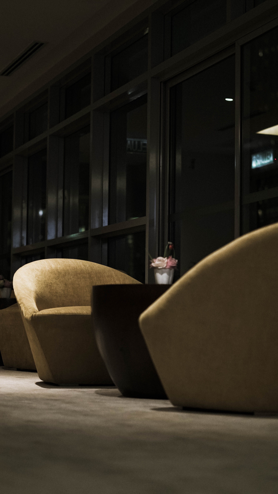

Abordagem médica pautada pela excelência científica e atualização constante. Um modelo de prática focado na precisão diagnóstica e no desenho de protocolos terapêuticos estritamente customizados, onde a ciência encontra a individualidade.
Preservação absoluta da individualidade e conveniência do paciente. Consultas conduzidas com tempo estendido, dedicação integral e um número estritamente limitado de casos ativos, assegurando suporte contínuo de alta fidelidade.